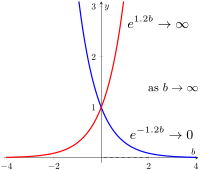

- \(\LARGE \vphantom{\int}\)L1.
- \(\ds \lap{ 1 } = \frac{1}{s}, \quad s >0 \)
- \(\LARGE \vphantom{\int}\)L2.
- \(\ds \lap{ e^{at} } = \frac{1}{s-a}, \quad s >a\)
- \(\LARGE \vphantom{\int}\)L3.
- \(\ds \lap{ t^n } = \frac{n!}{s^{n+1}}, \quad s >0 \)
- \(\LARGE \vphantom{\int}\)L4.
- \(\ds \lap{ \sin (bt) } = \frac{b}{s^2 + b^2}, \quad s >0\)
- \(\LARGE \vphantom{\int}\)L5.
- \(\ds \lap{ \cos(bt) } = \frac{s}{s^2 + b^2}, \quad s >0\)
- \(\LARGE \vphantom{\int}\)L6.
- \(\ds \lap{ t^n e^{at} } = \frac{n!}{(s-a)^{n+1}}, \quad s >a \)
- \(\LARGE \vphantom{\int}\)L7.
- \(\ds \lap{ e^{at} \sin(bt) } = \frac{b}{(s-a)^2 + b^2}, \quad s >a\)
- \(\LARGE \vphantom{\int}\)L8.
- \(\ds \lap{ e^{at} \cos(bt) } = \frac{s-a}{(s-a)^2 + b^2}, \quad s >a\)
- \(\LARGE \vphantom{\int}\)L9.
- \(\ds \lap{ a f(t) + b g(t) } = a \lap{ f(t) } + b \lap{ g(t) }, \quad a, b \text{ constant}\)
- \(\LARGE \vphantom{\int}\)L10.
- \(\ds \lap{ f'(t) } = sF(s) - f(0)\)
- \(\LARGE \vphantom{\int}\)L11.
- \(\ds \lap{ f''(t) } = s^2 F(s) - sf(0) - f'(0)\)
- \(\LARGE \vphantom{\int}\)L12.
- \(\ds \lap{ f^{(n)}(t) } = s^n F(s) - s^{n-1}f(0) - s^{n-2}f'(0) - \cdots - f^{(n-1)}(0)\)
- \(\LARGE \vphantom{\int}\)L13.
- \(\ds \lap{ t^n f(t) } = (-1)^n\frac{d^n}{ds^n}\big( \lap{ t^n f(t) } \big)\)
- \(\LARGE \vphantom{\int}\)L14.
- \(\ds \lap{ U(t-a) } = \frac{e^{-as}}{s}\)
- \(\LARGE \vphantom{\int}\)L15.
- \(\ds \lap{ f(t) U(t-a) } = e^{-as} \lap{ f(t+a) }\)
- \(\LARGE \vphantom{\int}\)L16.
- \(\ds \lap{ f(t-a)U(t-a) } = e^{-as}F(s)\)
Section C.5 Laplace Transforms
\begin{align*}
=\amp\ 15 \lim_{b \to \infty}\int_0^b 1\ dt
= 15 \lim_{b \to \infty} t\Big|_0^b
= 15 \lim_{b \to \infty} b = \infty.
\end{align*}
This shows that when \(s=0\text{,}\) the integral does not converge (does not exist) as required by the definition of the Laplace Transform. Therefore, when working with Laplace transforms, it is common restrict some values of \(s\text{.}\)
\begin{align*}
=\amp\ \lim_{b \to \infty} \int_0^b t\ dt
= \lim_{b \to \infty} \frac{t^2}{2}\Big|_0^b
= \frac{1}{2} \lim_{b \to \infty} b^2 = \infty.
\end{align*}
Therefore, we must have \(s\ne 0\) for this integral to be finite.
\begin{equation*}
\lim_{b \to \infty} \os{\infty}{\os{\uparrow}{\boxed{b}}}\ \us{\infty}{\us{\downarrow}{\boxed{e^{-sb}}}} = \infty.
\end{equation*}
This shows the Laplace transform would not exist if \(s \lt 0\text{.}\) Therefore, we must require \(s \gt 0\text{.}\)
\begin{align*}
\lap{ t^2 }
=\amp\ \int_0^{\infty} e^{-st}\cdot t^2 dt \\
\amp\os{(1)}{=} t^2 \cdot -\frac{1}{s}e^{-st}\Bigg|_0^{\infty}
- \int_0^{\infty} -\frac{1}{s}e^{-st}\cdot 2tdt \\
\amp\os{(2)}{=} -\frac{1}{s}\left[ t^2e^{-st}\Bigg|_0^{\infty}
- 2\int_0^{\infty}e^{-st}\cdot tdt \right] \\
\amp\os{(3)}{=} -\frac{1}{s}\left[t^2e^{-st}\Bigg|_0^{\infty}
- 2\lap{ t } \right] \\
\amp\os{(4)}{=} -\frac{1}{s}\left[ \lim_{b \to \infty}
t^2e^{-st}\Bigg|_0^{b} - 2\lap{ t } \right] \\
=\amp\ -\frac{1}{s}\left[ \lim_{b \to \infty}
\left( b^2e^{-sb} - 0^2\cdot e^{-s\cdot 0} \right)
- 2\cdot \frac{1}{s^2} \right] \\
=\amp\ -\frac{1}{s}\left[ \lim_{b \to \infty}
b^2e^{-sb} - 0 - \frac{2}{s^2} \right] \\
=\amp\ -\frac{1}{s}\left[ \lim_{b \to \infty}
\frac{b^2}{e^{sb}} - \frac{2}{s^2} \right] \\
\amp\os{(5)}{=} -\frac{1}{s}\left[ \lim_{b \to \infty}
\frac{2b}{se^{sb}} - \frac{2}{s^2} \right] \\
=\amp\ -\frac{1}{s}\left[ \frac{2}{s}\lim_{b \to \infty}
\frac{b}{e^{sb}} - \frac{2}{s^2} \right] \\
=\amp\ -\frac{1}{s}\left[ \frac{2}{s}\lim_{b \to \infty}
\frac{1}{se^{sb}} - \frac{2}{s^2} \right] \\
=\amp\ -\frac{1}{s}\left[ \frac{2}{s}\cdot 0
- \frac{2}{s^2} \right] \\
=\amp\ \frac{2}{s^3}
\end{align*}
\begin{align*}
\lap{ t^3 }
=\amp\ \int_0^{\infty} e^{-st}\cdot t^3 dt \\
\amp\os{(1)}{=} t^3 \cdot -\frac{1}{s}e^{-st}\Bigg|_0^{\infty} - \int_0^{\infty} -\frac{1}{s}e^{-st}\cdot 3t^2dt \\
\amp\os{(2)}{=} -\frac{1}{s}\left[ t^3e^{-st}\Bigg|_0^{\infty} - 3\int_0^{\infty}e^{-st}\cdot t^2 dt \right]\\
\amp\os{(3)}{=} -\frac{1}{s}\left[ \lim_{b \to \infty}t^3 e^{-st}\Bigg|_0^{b} - 3\lap{ t^2 } \right]\\
\amp\os{(4)}{=} -\frac{1}{s}\left[ \lim_{b \to \infty}\left( b^3 e^{-sb} - 0^3\cdot e^{-s\cdot 0} \right) - 3\cdot \frac{2}{s^3} \right]\\
=\amp\ -\frac{1}{s}\left[ \lim_{b \to \infty}b^3 e^{-sb} - 0 - \frac{6}{s^3} \right]\\
=\amp\ -\frac{1}{s}\left[ \lim_{b \to \infty}\frac{b^3}{e^{sb}} - \frac{6}{s^3} \right]\\
\amp\os{(5)}{=} -\frac{1}{s}\left[ \lim_{b \to \infty}\frac{3b^2}{se^{sb}} - \frac{6}{s^3} \right]\\
=\amp\ -\frac{1}{s}\left[ \frac{3}{s}\lim_{b \to \infty}\frac{b^2}{e^{sb}} - \frac{6}{s^3} \right]\\
=\amp\ -\frac{1}{s}\left[ \frac{3}{s}\lim_{b \to \infty}\frac{2b}{se^{sb}} - \frac{6}{s^3} \right]\\
=\amp\ -\frac{1}{s}\left[ \frac{6}{s^2}\lim_{b \to \infty}\frac{b}{e^{sb}} - \frac{6}{s^3} \right]\\
=\amp\ -\frac{1}{s}\left[ \frac{6}{s^2}\lim_{b \to \infty}\frac{1}{se^{sb}} - \frac{6}{s^3} \right]\\
=\amp\ -\frac{1}{s}\left[ \frac{6}{s^2}\cdot 0 - \frac{6}{s^3} \right]\\
=\amp\ \frac{6}{s^4}
\end{align*}
\begin{align*}
\lap{ t^4 }
=\amp\ \int_0^{\infty} e^{-st}\cdot t^4 dt\\
\amp\os{(1)}{=} t^4 \cdot -\frac{1}{s}e^{-st}\Bigg|_0^{\infty} - \int_0^{\infty} -\frac{1}{s}e^{-st}\cdot 4t^3dt\\
\amp\os{(2)}{=} -\frac{1}{s}\left[ t^4e^{-st}\Bigg|_0^{\infty} - 4\int_0^{\infty}e^{-st}\cdot t^3 dt \right]\\
\amp\os{(3)}{=} -\frac{1}{s}\left[ \lim_{b \to \infty}t^4 e^{-st}\Bigg|_0^{b} - 4\lap{ t^3 } \right]\\
\amp\os{(4)}{=} -\frac{1}{s}\left[ \lim_{b \to \infty}\left( b^4 e^{-sb} - 0^4\cdot e^{-s\cdot 0} \right) - 4\cdot \frac{6}{s^4} \right]\\
=\amp\ -\frac{1}{s}\left[ \lim_{b \to \infty}b^4 e^{-sb} - 0 - \frac{24}{s^4} \right]\\
=\amp\ -\frac{1}{s}\left[ \lim_{b \to \infty}\frac{4b^3}{se^{sb}} - \frac{24}{s^4} \right]\\
=\amp\ -\frac{1}{s}\left[ \frac{4}{s}\lim_{b \to \infty}\frac{b^3}{e^{sb}} - \frac{24}{s^4} \right]\\
\amp\os{(5)}{=} -\frac{1}{s}\left[ \frac{4}{s}\lim_{b \to \infty}\frac{3b^2}{se^{sb}} - \frac{24}{s^4} \right]\\
=\amp\ -\frac{1}{s}\left[ \frac{12}{s^2}\lim_{b \to \infty}\frac{b^2}{e^{sb}} - \frac{24}{s^4} \right]\\
=\amp\ -\frac{1}{s}\left[ \frac{12}{s^2}\lim_{b \to \infty}\frac{2b}{se^{sb}} - \frac{24}{s^4} \right]\\
=\amp\ -\frac{1}{s}\left[ \frac{24}{s^3}\lim_{b \to \infty}\frac{b}{e^{sb}} - \frac{24}{s^4} \right]\\
=\amp\ -\frac{1}{s}\left[ \frac{24}{s^3}\lim_{b \to \infty}\frac{1}{se^{sb}} - \frac{24}{s^4} \right]\\
=\amp\ -\frac{1}{s}\left[ \frac{24}{s^3}\cdot 0 - \frac{24}{s^4} \right]\\
=\amp\ \frac{24}{s^5}
\end{align*}
Key Steps
- \(\os{[1]}{=}\)
- Integration by parts with \(u = f(t)\) and \(dv = e^{-st} dt\)
- \(\os{[2]}{=}\)
- \(s\) is a constant in this integral, so we can bring it out.
- \(\os{[3]}{=}\)
- \(\ds e^{-st} f(t) = \frac{f(t)}{e^{st}}\) must go to zero.
graph of \(e^{-1.2b}\) vs. \(e^{+1.2b}\).

\begin{align*}
\amp L14: \quad \ds \lap{ U(t-a) } = \frac{e^{-as}}{s}\\
\amp L15: \quad \ds \lap{ f(t) U(t-a) } = e^{-as} \lap{ f(t+a) }\\
\amp L16: \quad \ds \lap{ f(t-a)U(t-a) } = e^{-as}F(s)
\end{align*}
\begin{align*}
4s^3 \amp - 13s^2 + 74s + 27\\
=\amp\ (As + B)(s+1)^2 + C(s+1)(s^2 - 6s + 25) + D(s^2 - 6s + 25)\\
=\amp\ (As + B)(s^2 + 2s + 1) + (Cs+C)(s^2 - 6s + 25) + Ds^2 - 6Ds + 25D\\
=\amp\ As^3 + 2As^2 + As + Bs^2 + 2Bs + B + Cs^3 - 6Cs^2 + 25Cs + Cs^2 - 6Cs + 25C + Ds^2 - 6Ds + 25D\\
=\amp\ (A + C)s^3 + (2A+ B - 6C + C + D)s^2 + (A+ 2B + 25C- 6C- 6D)s + (B + 25C + 25D)\\
=\amp\ (A + C)s^3 + (2A+ B - 5C + D)s^2 + (A+ 2B + 19C- 6D)s + (B + 25C + 25D)
\end{align*}
Equating coefficients gives us four equations in four unknowns.
\begin{align*}
A+C =\amp\ 4 \amp 2A+B-5C+D =\amp\ -13 \amp A + 2B + 19C - 6D =\amp\ 74 \amp B+ 25C + 25D =\amp\ 27\\
A =\amp\ 4-C\amp \amp \amp \amp \amp\amp\\
\amp \amp 2(4 - C)+B-5C+D =\amp\ -13 \amp (4-C)+2B+19C-6D =\amp\ 74 \amp\amp\\
\amp \amp B - 7C + D =\amp\ -21 \amp 2B+18C-6D =\amp\ 70 \amp\amp\\
\amp \amp B =\amp\ 7C - D - 21 \amp \amp \amp\amp\\
\amp \amp \amp \amp 2(7C - D - 21)+18C-6D =\amp\ 70 \amp\\
(7C - D - 21) + 25C + 25D =\amp\ 27\\
\amp \amp \amp \amp 32C-8D =\amp\ 112 \amp\\
32C + 24D =\amp\ 48\\
\amp \amp \amp \amp 32C =\amp\ 8D + 112 \amp\amp\\
\amp \amp \amp \amp \amp \amp\\
(8D + 112) + 24D =\amp\ 48\\
\amp \amp \amp \amp \amp \amp\\
32D =\amp\ -64\\
\amp \amp \amp \amp \amp \amp\\
D =\amp\ -2\\
\amp \amp \amp \amp 32C =\amp\ 8(-2) + 112 \amp\amp\\
\amp \amp \amp \amp =\amp\ 96 \amp\amp\\
\amp \amp \amp \amp C =\amp\ 3 \amp\amp\\
\amp \amp B =\amp\ 7(3) - (-2) - 21\amp \amp \amp \amp\amp\\
\amp \amp =\amp\ 2 \amp \amp \amp \amp\amp\\
A =\amp\ 4 - (3)\amp \amp \amp \amp \amp \amp\amp\\
=\amp\ 1 \amp \amp \amp \amp \amp \amp\amp
\end{align*}
Partial fraction decomposition has the form,
\begin{equation*}
\frac{54}{(s+1)(s^2 - 4s + 13)} = \frac{A}{s+1} + \frac{Bs + C}{s^2 - 4s + 13},
\end{equation*}
and we find \(A\text{,}\) \(B\text{,}\) and \(C\) by
\begin{align*}
54 =\amp\ A(s^2 - 4s + 13) + (Bs+C)(s+1)\\
54 =\amp\ As^2 - 4As + 13A + Bs^2 + Bs + Cs + C\\
0s^2 + 0s + 54 =\amp\ (A + B)s^2 + (-4A + B + C)s + (13A + C)
\end{align*}
\begin{align*}
A+B =\amp\ 0 \amp -4A +B+C =\amp\ 0 \amp 13A + C =\amp\ 54\\
A =\amp\ -B \amp \amp \amp \amp\\
\amp \amp -4(-B)+B+C =\amp\ 0 \amp 13(-B)+C =\amp\ 54\\
\amp \amp 5B + C =\amp\ 0 \amp -13B + C =\amp\ 54\\
\amp \amp C =\amp\ -5B \amp \amp\\
\amp \amp \amp \amp -13B + (-5B) =\amp\ 54\\
\amp \amp \amp \amp -18B =\amp\ 54\\
\amp \amp \amp \amp B =\amp\ -3\\
A =\amp\ -(-3) \amp C =\amp\ -5(-3)\amp \amp\\
=\amp\ 3 \amp =\amp\ 15\amp \amp
\end{align*}
\begin{align*}
x(t) =\amp\ 3e^{-t} - 3e^{2t}\cos(3t) + 3e^{2t}\sin(3t)\\
=\amp\ 3e^{-t} + e^{2t} \Big[ 3\sin(3t) - 3\cos(3t) \Big]\\
\amp\\
x'(t) =\amp\ -3e^{-t} + e^{2t}\Big[ 9\cos(3t) + 9\sin(3t) \Big]\\
=\amp\ -3e^{-t} + e^{2t}\Big[ 9\cos(3t) + 9\sin(3t) + 6\sin(3t) - 6\cos(3t) \Big]\\
=\amp\ -3e^{-t} + e^{2t}\Big[ 3\cos(3t) + 15\sin(3t) \Big]\\
\amp\\
x''(t) =\amp\ 3e^{-t} + e^{2t}\Big[ -9\sin(3t) + 45\cos(3t) \Big]\\
=\amp\ 3e^{-t} + e^{2t}\Big[ -9\sin(3t) + 45\cos(3t) + 6\cos(3t) + 30\sin(3t) \Big]\\
=\amp\ 3e^{-t} + e^{2t}\Big[ 21\sin(3t) + 51\cos(3t) \Big]
\end{align*}
\begin{align*}
LHS =\amp\ x'' - 4x' + 13x\\
=\amp\ \left( 3e^{-t} + e^{2t}\Big[ 21\sin(3t) + 51\cos(3t) \Big] \right) \\
=\amp\ 3e^{-t} + e^{2t}\Big[ 21\sin(3t) + 51\cos(3t) \Big] \\
=\amp\ 3e^{-t} + e^{2t}\Big[ 21\sin(3t) + 51\cos(3t) \Big] \\
=\amp\ 54e^{-t}\\
=\amp\ RHS
\end{align*}
We also verify the initial conditions:
\begin{align*}
x(0) =\amp\ 3e^{-0} + e^{2\cdot 0} \Big[ 3\sin(3\cdot 0) - 3\cos(3\cdot 0) \Big]\\
=\amp\ 3 + \Big[ 3\cdot 0 - 3\cdot 1 \Big]\\
=\amp\ 3 - 3\\
=\amp\ 0\\
\amp\\
x'(0) =\amp\ -3e^{-0} + e^{2\cdot 0}\Big[ 3\cos(3\cdot 0) + 15\sin(3\cdot 0) \Big]\\
=\amp\ -3 + \Big[ 3\cdot 1 + 15\cdot 0 \Big]\\
=\amp\ - 3 + 3\\
=\amp\ 0
\end{align*}
\(\lap{e^{at}}\) Details.
Using the definition of the Laplace transform:
\begin{align*}
\lap{ e^{at} }
=\amp\ \int_0^{\infty} e^{-st} \cdot e^{at}\ dt\\
=\amp\ \lim_{b \to \infty}\int_0^b e^{(-s+a)t}\ dt
\end{align*}
For the integral to converge, the exponent \(-s+a\) must be negative, leading to the condition \(s \gt a\text{.}\) Proceeding with the integration:
\begin{align*}
\lap{ e^{at} }
=\amp\ \lim_{b \to \infty}\int_0^b e^{(-s+a)t}\ dt\\
=\amp\ \lim_{b \to \infty} \frac{1}{a-s} e^{(-s+a)t} \Bigg|_0^b\\
=\amp\ \frac{1}{a-s} \left[ \lim_{b \to \infty} \left( e^{(a-s)b} - 1 \right) \right]\\
=\amp\ \frac{1}{a-s} \left[ 0 - 1 \right]\\
=\amp\ -\frac{1}{a-s} = \frac{1}{s-a}. \quad \text{for } s \gt a
\end{align*}
Thus, the Laplace transform of \(e^{at}\) is:
\begin{equation*}
\ds \lap{e^{at}} = \frac{1}{s - a}, \quad s \gt a.
\end{equation*}
\(\lap{t}\) Details.
Using the definition of the Laplace transform:
\begin{equation*}
\lap{ t } = \lim_{b \to \infty} \ub{\int_0^b e^{-st} \cdot t\ dt}_{I}
\end{equation*}
Integration by parts on \(I\), gives us
\begin{align*}
\phantom{\lap{t}}
=\amp\ \lim_{b \to \infty} \left[-\frac{b}{s}e^{-sb} + \frac{1}{s}\int_0^b e^{-st} dt\right]\\
\phantom{\lap{t}}
=\amp\ -\frac{1}{s} \lim_{b \to \infty} \left[-\frac{b}{e^{sb}}\right] + \frac{1}{s}\lim_{b \to \infty}\int_0^b e^{-st}\ dt\\
\phantom{\lap{t}}
=\amp\ -\frac{1}{s}\ub{\lim_{b \to \infty}\frac{b}{e^{sb}}}_{L} + \frac{1}{s}\ub{\int_0^\infty e^{-st}\ dt}_{\lap{1}}
\end{align*}
L’Hopital’s Rule shows \(L=0\) and \(\lap{1}\) is known. Therefore,
\begin{equation*}
\lap{ t } = \frac{1}{s^2}, \quad s > 0\text{.}
\end{equation*}
\begin{align*}
u = t, \quad\amp dv = e^{-st}dt, \\
du = dt, \quad\amp v = -\frac{1}{s}e^{-st}
\end{align*}
\begin{align*}
\int_0^b e^{-st} \cdot t\ dt
=\amp\ t \cdot \left( -\frac{1}{s}e^{-st} \right)\Bigg|_0^b - \int_0^b \left( -\frac{1}{s}e^{-st} \right) dt\\
=\amp\ -\frac{b}{s}e^{-sb} + \frac{1}{s}\int_0^b e^{-st} dt
\end{align*}
\begin{equation*}
L = \lim_{b \to \infty}\frac{\os{\infty}{\os{\uparrow}{\boxed{b}}}}{\us{\infty}{\us{\downarrow}{\boxed{e^{sb}}}}}
\,\us{LH}{=}\, \lim_{b \to \infty}\frac{1}{se^{sb}}
= \frac{1}{s}\lim_{b \to \infty}\frac{1}{\us{\infty}{\us{\downarrow}{\boxed{e^{sb}}}}}
= 0
\end{equation*}
\(\lap{t^2}\) Details.
Using the definition of the Laplace transform:
\begin{equation*}
\lap{ t^2 } = \lim_{b \to \infty} \ub{\int_0^b e^{-st} \cdot t^2\ dt}_{I}
\end{equation*}
Integration by parts on \(I\), gives us
\begin{align*}
\phantom{\lap{t}}
=\amp\ \lim_{b \to \infty} \left[-\frac{b^2}{s}e^{-sb} + \frac{2}{s}\int_0^b e^{-st}\cdot t\ dt\right]\\
\phantom{\lap{t}}
=\amp\ -\frac{1}{s} \lim_{b \to \infty} \left[-\frac{b^2}{e^{sb}}\right] + \frac{2}{s}\lim_{b \to \infty}\int_0^b e^{-st}\cdot t\ dt\\
\phantom{\lap{t}}
=\amp\ -\frac{1}{s}\ub{\lim_{b \to \infty}\frac{b^2}{e^{sb}}}_{L} + \frac{2}{s}\ub{\int_0^\infty e^{-st}\cdot t\ dt}_{\lap{t}}
\end{align*}
L’Hopital’s Rule shows \(L=0\) and \(\lap{t}=1/s^2\text{.}\) Therefore,
\begin{equation*}
\lap{ t^2 } = \frac{2}{s^3}, \quad s > 0\text{.}
\end{equation*}
\begin{align*}
u = t^2, \quad\amp dv = e^{-st}dt, \\
du = 2t\ dt, \quad\amp v = -\frac{1}{s}e^{-st}
\end{align*}
\begin{align*}
\int_0^b e^{-st} \cdot t^2\ dt
=\amp\ t^2 \cdot \left( -\frac{1}{s}e^{-st} \right)\Bigg|_0^b - \int_0^b \left( -\frac{1}{s}e^{-st} \right) 2t\ dt\\
=\amp\ -\frac{b^2}{s}e^{-sb} + \frac{2}{s} \int_0^b e^{-st} \cdot t\ dt
\end{align*}
\begin{align*}
L = \lim_{b \to \infty}\frac{\os{\infty}{\os{\uparrow}{\boxed{b^2}}}}{\us{\infty}{\us{\downarrow}{\boxed{e^{sb}}}}}\
\amp\us{LH}{=}\ \lim_{b \to \infty}\frac{2b}{se^{sb}}\
= \frac{2}{s}\lim_{b \to \infty}\frac{\os{\infty}{\os{\uparrow}{\boxed{b}}}}{\us{\infty}{\us{\downarrow}{\boxed{e^{sb}}}}}\\
\amp\us{LH}{=}\ \frac{2}{s}\lim_{b \to \infty}\frac{1}{se^{sb}}
= \frac{2}{s^2}\lim_{b \to \infty}\frac{1}{\us{\infty}{\us{\downarrow}{\boxed{e^{sb}}}}}
= 0
\end{align*}